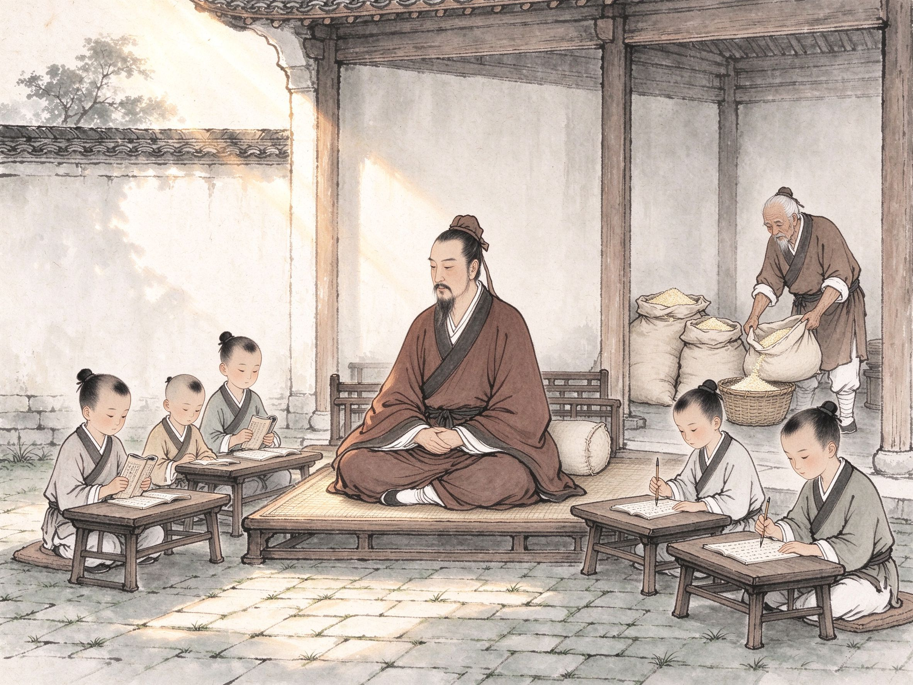
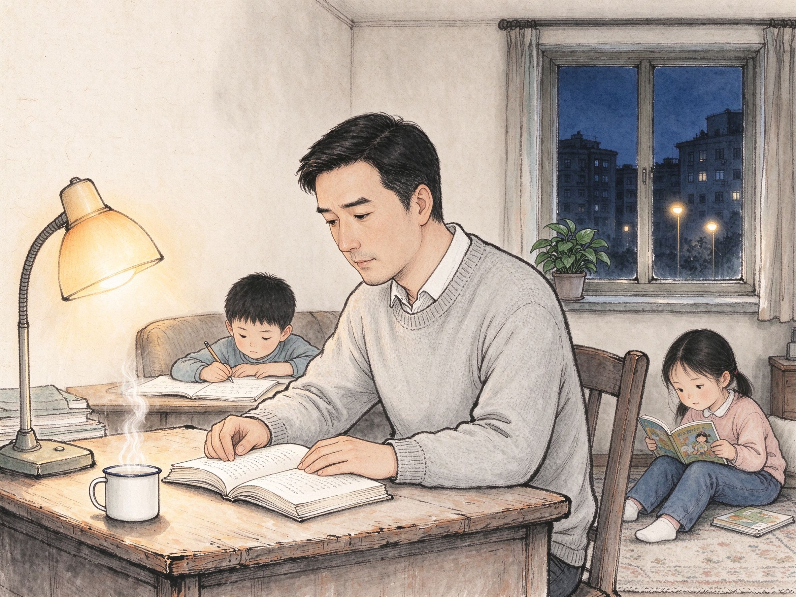

上一课，孟妈妈挑地方。这一课换一位父亲——地方他挑不了，他先把自己立住了。
很久以前，有个姓窦的人，住在燕山边上，人们就叫他窦燕山。
他年轻的时候，心眼小。做事先算自己得多少，别人难不难，他不太看。家里有些钱，可邻里提起他，多半摇头。
后来有一年，他心里忽然翻了个个儿。夜里梦见先人责备他，醒来一身汗。他没有先去怪谁，先问了自己一句：这几十年，我都干了什么？
从那以后，他改了。谁家揭不开锅，他送米；谁家孩子没钱念书，他出钱；借了人家的，一定还；说过的话，一定做到。

他教五个儿子，也不是天天盯着催。他先立规矩，然后自己做给他们看：早起、守信、不欺负人、见人难处搭一把手。
后来，五个儿子先后都考中了进士。人们把这件事叫“五子登科”。

这件事稀奇的地方，不是五个都考中。是这家里有一种稳稳的气：父亲不急不吼，孩子也就不慌不乱。
所以“义方”不是一叠厚厚的家规。它是大人先站稳，孩子照着长。
盯着孩子做错的地方，不停说教；规矩只用来管孩子。
先端正自己，日常行止就是范本；正道是一家人一起守的底色。
“有义方”不是严厉管教，是把自己先立住。窦燕山的转折，起点在修自己，不在管孩子。
一、稳住自己的情绪。你稳定平和，就是家里最重要的“方”。
二、言行一致。要求孩子做到的，自己先尽量做到。
三、排好优先级。品行宽厚在前，分数学业在后。
接上选择力练习：有义方托底，仍然给孩子自主选择的空间——规矩托底，选择生长。
“窦燕山”，本名窦禹钧，五代后周时人，家居渔阳（今天津蓟州一带），因所居近燕山，人称窦燕山。“义”，宜也（《中庸》“义者宜也”），行事合于当然之则；“方”，法度、轨则。
全句：窦禹钧立身持正，教子有合于正道的恒常法度。“义”落在“合宜”，不落在“严厉”——这是读通此句的第一道关口。
二 · 命题考辨出处须分层：《宋史·窦仪传》载其五子仪、俨、侃、偁、僖相继进士及第，此为史传可据者；济人阴德、梦兆延寿诸事，主要见于范仲淹《窦谏议录》，属宋人劝善叙事，带报应色彩，宜作训读，不宜作实录。
常见误解有二。其一，把“义方”读成“家规森严、棍棒之下”——这是后世家训文本强化的读法，非本句本义。其二，把“五子登科”当作教法说明书——它是结果叙事，不是方法清单；由果推因，最容易把偶然读成必然。
“义方”的重心在施教者自身：先有其人，后有其法。故本句与下句“教五子，名俱扬”是一事之因果，不可割开单读。
三 · 中西对照孔子：“其身正，不令而行；其身不正，虽令不从。”（《论语·子路》）——身教先于言教，与本句一脉。
荀子：“学莫便乎近其人。”（《劝学》）——教化之效，多在近处观摹，而非远处理论。
阿德勒（个体心理学）：家庭氛围与父母的人格状态，对孩子的影响常大于直接说教。
蒙台梭利：成人是儿童环境的一部分；成人的内在安宁，是儿童心智安定的前提。
反向（布迪厄）：身教传递的不只是德行，还有趣味、语言与阶层惯习。示范越有效，复制越彻底——这是“义方”的阴影面，须一并看见。
四 · 与前后课的张力与第五课孟母并置：择处是外缘，义方是内本。环境可迁则迁之；迁不动，教化者自身就成了那个“场域”。两课咬合处正在此：孟母向外求，窦氏向内立。
与第四课“贵以专”对读：专是学习者向内收摄，义方是施教者向外立基。一收一立，教与学各守其位。
与第一课四大天赋相连：良知的滋养，最优先来自长期稳定的身教，而非口头道理。道理可以背，样子只能看。
一、“义方”的边界在哪？稳定底色与固化枷锁只隔一层纸：稳定的标准给人安全感，僵化的标准压掉独立意志。分寸如何量化，本句未答。
二、身教感染力越强，施教者的认知局限也被放大得越彻底。若“方”本身有偏，孩子学得越像，偏得越深。此问触到身教的根。
三、持续自持对普通人是高门槛。家长自身烦恼深重、精力耗竭时，“义方”是否还有可行的低配路径？还是说，这句话只对有余力者成立？